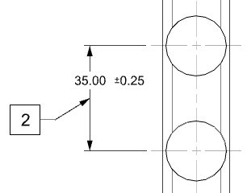
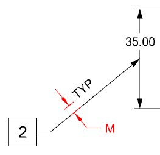
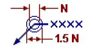

Drafting leader line enhancements
What is it?
Leader lines for Drafting annotations are improved with the following enhancements:
-
You can associatively attach an annotation with Plain or All Around leaders to the midpoint or to a selected point of a dimension line.

Note
NX infers the intended attachment point based on the distance between the pick point and the midpoint location of the dimension line. The leader is created at the dimension line midpoint if the distance between the pick point and the midpoint is less than two times character size. If greater, the leader is created at the pick point location
-
A new spacing option, M, lets you control the distance between a leader line and an annotation placed on the leader line using the Flag leader type. The spacing is given as a factor of the font size of the annotation you are placing.

-
You can control the size of the All Around (single circle) and All Over (double circle) symbols on a leader line using the new N size option. The size is given in inches or millimeters, depending on the unit type of your part. The initial size is equal to the Character Size on the Line/Arrow tab of the Annotation Preference dialog box.

Where do I find it?
Set the M and N preference or edit the style of an existing leader
|
Application |
Drafting |
|
Toolbar |
Annotation→Annotation Preferences |
|
Menu |
Preferences→Annotation |
|
Graphics window |
Right-click leader line→Style |
|
Location in dialog box |
Line/Arrow tab→M Line/Arrow tab→N |
M and N customer defaults
|
Menu |
File→Utilities→Customer Defaults |
|
Location in dialog box |
Drafting→General→Standard tab→click Customize Standard. On the Annotation→Line/Arrow tab→M and N |